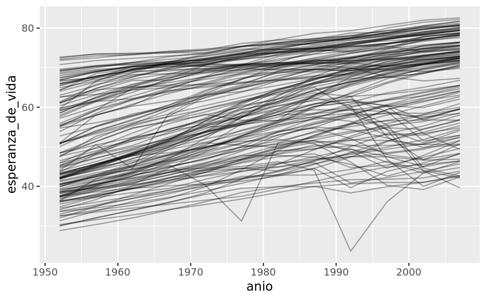
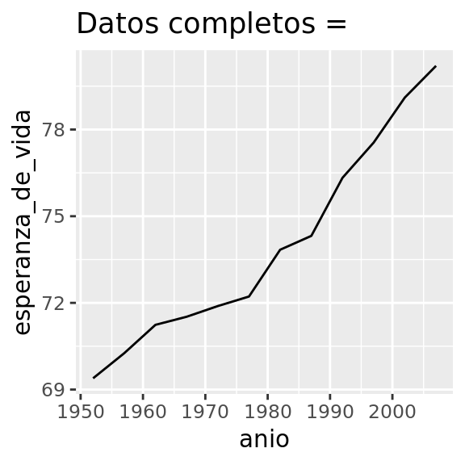
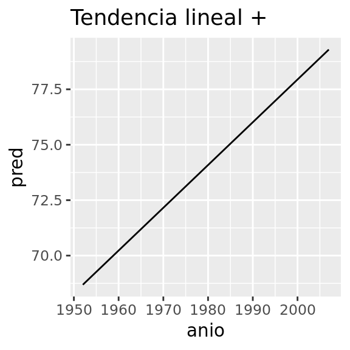
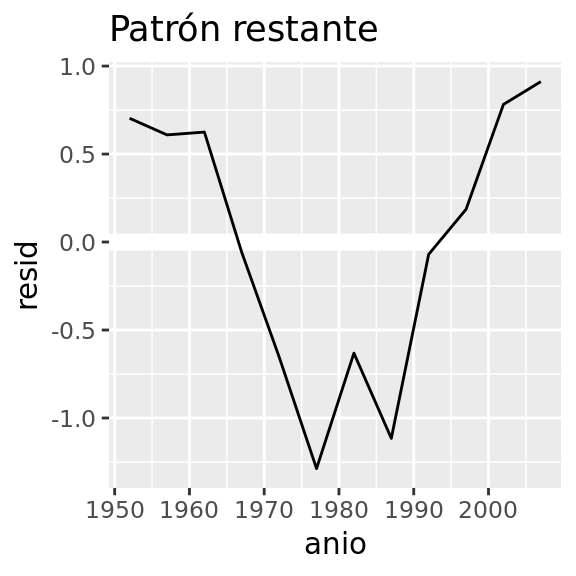
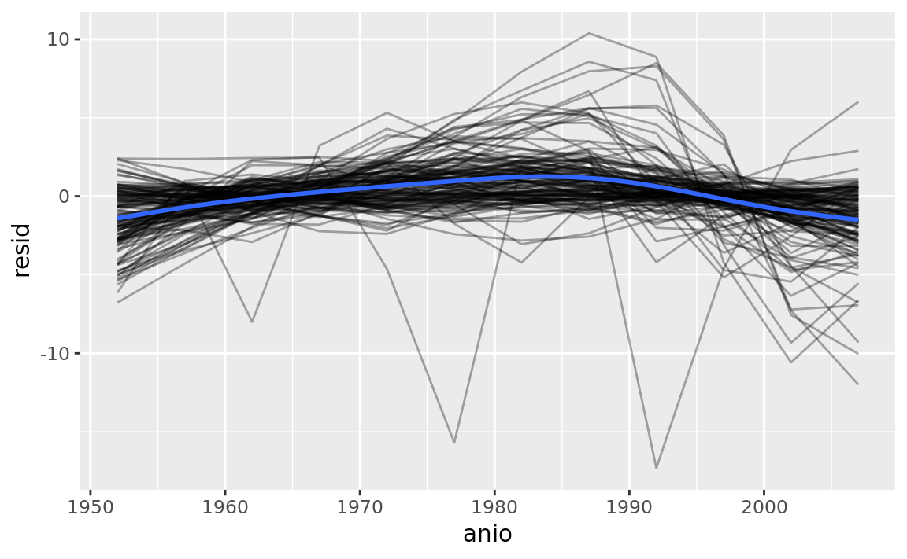
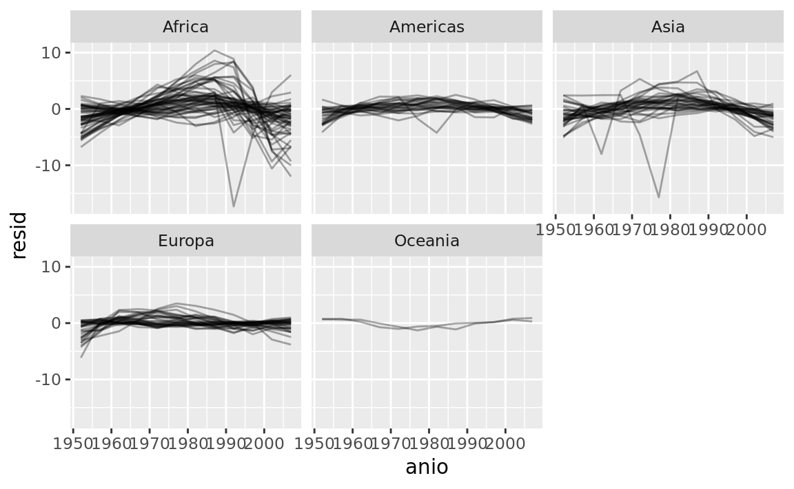
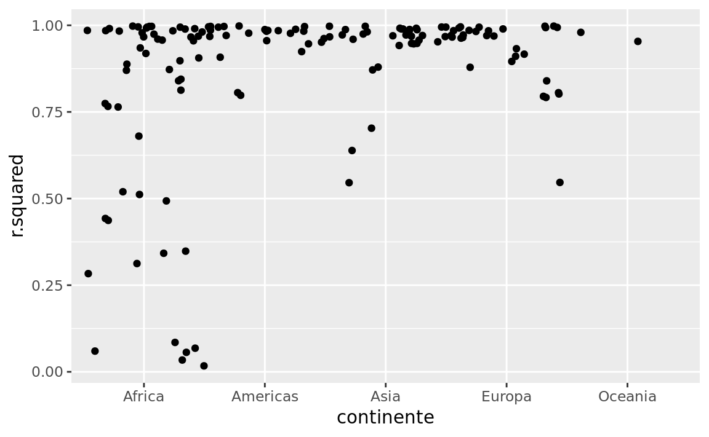
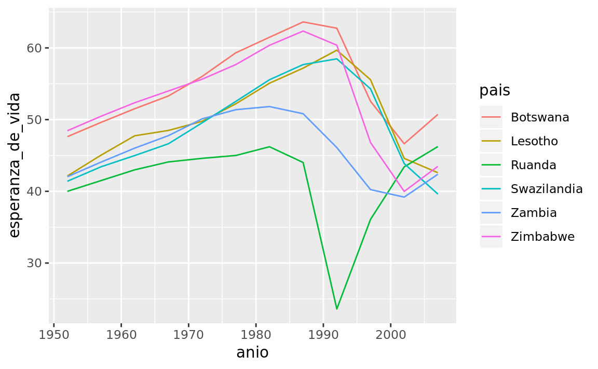

25 Muchos modelos
25.1 Introducción
En este capítulo vas a aprender tres ideas poderosas que te van a ayudar a trabajar fácilmente con un gran número de modelos:
Usar muchos modelos simples para entender mejor conjuntos de datos complejos.
Usar columnas-lista (list-columns) para almacenar estructuras de datos arbitrarias en un data frame. Ésto, por ejemplo, te permitirá tener una columna que contenga modelos lineales.
Usar el paquete broom, de David Robinson, para transformar modelos en datos ordenados. Ésta es una técnica poderosa para trabajar con un gran número de modelos porque una vez que tienes datos ordenados, puedes aplicar todas las técnicas que has aprendido anteriormente en el libro.
Empezaremos entrando de lleno en un ejemplo motivador usando datos sobre la esperanza de vida alrededor del mundo. Es un conjunto de datos pequeño pero que ilustra cuán importante puede ser modelar para mejorar tus visualizaciones. Utilizaremos un número grande de modelos simples para extraer algunas de las señales más fuertes y que podamos ver las sutiles que permanecen. También veremos cómo las medidas de resumen de los modelos nos pueden ayudar a encontrar datos atípicos y tendencias inusuales.
Las siguientes secciones ahondarán en más detalles acerca de las técnicas:
En columnas-lista, aprenderás más acerca de la estructura de datos columna-lista, y por qué es válido poner listas en data frames.
En creando columnas-lista, aprenderás las tres maneras principales en las que crearás columnas-lista.
En simplificando columnas-lista aprenderás cómo convertir columnas-lista de vuelta a vectores atómicos regulares (o conjuntos de vectores atómicos) para que puedas trabajar con ellos más fácilmente.
En haciendo datos ordenados con broom, aprenderás sobre el conjunto de herramientas completo provisto por broom (del inglés escoba), y verás cómo puede ser aplicado a otros tipos de estructuras de datos.
Este capítulo es aspiracional en cierta medida: si este libro es tu primera introducción a R, este capítulo es probable que sea una lucha para ti. Requiere que tengas profundamente internalizadas ideas acerca de modelamiento, estructuras de datos, e iteración. Así que no te preocupes si no lo entiendes — solo aparta este capítulo por un par de meses, y vuelve cuando quieras ejercitar tu cerebro.
25.1.1 Prerrequisitos
Trabajar con muchos modelos requiere muchos de los paquetes del tidyverse (para exploración de datos, doma y programación) y modelr para facilitar el modelamiento.
library(modelr)
library(tidyverse)25.2 gapminder
Para motivar el poder de muchos modelos simples, vamos a mirar los datos de “gapminder”. Estos datos fueron popularizados por Hans Rosling, un doctor y estadístico sueco. Si nunca has escuchado de él, para de leer este capítulo ahora mismo y ve a mirar uno de sus videos! Él es un presentador de datos fantástico e ilustra cómo puedes usar datos para presentar una historia convincente. Un buen lugar para empezar es este video corto filmado en conjunto con la BBC: https://www.youtube.com/watch?v=jbkSRLYSojo.
Los datos de gapminder resumen la progresión de países a través del tiempo, mirando estadísticos como esperanza de vida y PIB. Los datos son de fácil acceso en R, gracias a Jenny Bryan que creó el paquete gapminder. Utilizaremos la versión en español contenida en el paquete datos (TODO: ver cómo poner esto):
library(datos)
paises
#> # A tibble: 1,704 x 6
#> pais continente anio esperanza_de_vida poblacion pib_per_capita
#> <fct> <fct> <int> <dbl> <int> <dbl>
#> 1 Afganistan Asia 1952 28.8 8425333 779.
#> 2 Afganistan Asia 1957 30.3 9240934 821.
#> 3 Afganistan Asia 1962 32.0 10267083 853.
#> 4 Afganistan Asia 1967 34.0 11537966 836.
#> 5 Afganistan Asia 1972 36.1 13079460 740.
#> 6 Afganistan Asia 1977 38.4 14880372 786.
#> # … with 1,698 more rowsEn este caso de estudio, nos enfocaremos en solo tres variables para responder la pregunta “¿Cómo la esperanza de vida (esperanza_de_vida) cambia a través del tiempo (anio) para cada país (pais)?”. Un buen lugar para empezar es con un gráfico:
paises %>%
ggplot(aes(anio, esperanza_de_vida, group = pais)) +
geom_line(alpha = 1 / 3)
Es un conjunto de datos pequeño: solo tiene ~1,700 observaciones y 3 variables. Pero aún así es difícil ver qué está pasando! En general, parece que la esperanza de vida ha estado mejorando en forma constante. Sin embargo, si miras de cerca, puedes notar algunos países que no siguen este patrón. ¿Cómo podemos hacer que esos países se vean más fácilmente?
Una forma es usar el mismo enfoque que en el último capítulo: hay una señal fuerte (en general crecimiento lineal) que hace difícil ver tendencias más sutiles. Separaremos estos factores estimando un modelo con una tendencia lineal. El modelo captura el crecimiento estable en el tiempo, y los residuos mostrarán lo que queda fuera.
Ya sabes cómo hacer eso si tenemos un solo país:
nz <- filter(paises, pais == "Nueva Zelandia")
nz %>%
ggplot(aes(anio, esperanza_de_vida)) +
geom_line() +
ggtitle("Datos completos = ")
nz_mod <- lm(esperanza_de_vida ~ anio, data = nz)
nz %>%
add_predictions(nz_mod) %>%
ggplot(aes(anio, pred)) +
geom_line() +
ggtitle("Tendencia lineal + ")
nz %>%
add_residuals(nz_mod) %>%
ggplot(aes(anio, resid)) +
geom_hline(yintercept = 0, colour = "white", size = 3) +
geom_line() +
ggtitle("Patrón restante")
¿Cómo podemos ajustar fácilmente ese modelo para cada país?
25.2.1 Datos anidados
Te puedes imaginar copiando y pegando ese código múltiples veces; pero ya has aprendido una mejor forma! Extrae el código en común con una función y repítelo usando una función map (TODO: no me queda claro que tenga sentido poner que el nombre de esta función venga del inglés, y no sé si ponerla en cursiva) de purrr. Este problema se estructura un poco diferente respecto a lo que has visto antes. En lugar de repetir una acción por cada variable, queremos repetirla para cada país, un subconjunto de filas. Para hacer eso, necesitamos una nueva estructura de datos: el data frame anidado (nested data frame). Para crear un data frame anidado empezamos con un data frame agrupado, y lo “anidamos”:
por_pais <- paises %>%
group_by(pais, continente) %>%
nest()
por_pais
#> # A tibble: 142 x 3
#> pais continente data
#> <fct> <fct> <list>
#> 1 Afganistan Asia <tibble [12 × 4]>
#> 2 Albania Europa <tibble [12 × 4]>
#> 3 Argelia Africa <tibble [12 × 4]>
#> 4 Angola Africa <tibble [12 × 4]>
#> 5 Argentina Americas <tibble [12 × 4]>
#> 6 Australia Oceania <tibble [12 × 4]>
#> # … with 136 more rows(Estoy haciendo un poco de trampa agrupando por continente y pais al mismo tiempo. Dado el pais, continente es fijo, así que no agrega ningún grupo más, pero es una forma fácil de llevarnos una variable adicional para el camino.)
Ésto crea un data frame que tiene una fila por grupo (por país), y una columna bastante inusual: data. data es una lista de data frames (o tibbles, para ser precisos). Esto parece una idea un poco loca: tenemos un data frame con una columna que es una lista de otros data frames! Explicaré brevemente por qué pienso que es una buena idea.
La columna data es un poco difícil de examinar porque es una lista moderadamente complicada, y todavía estamos trabajando para tener buenas herramientas para explorar estos objetos. Desafortunadamente usar str() no es recomendable porque usualmente producirá un output (salida de código) muy extenso. Pero si extraes un solo elemento de la columna data verás que contiene todos los datos para ese país (en este caso, Afganistán).
por_pais$data[[1]]
#> # A tibble: 12 x 4
#> anio esperanza_de_vida poblacion pib_per_capita
#> <int> <dbl> <int> <dbl>
#> 1 1952 28.8 8425333 779.
#> 2 1957 30.3 9240934 821.
#> 3 1962 32.0 10267083 853.
#> 4 1967 34.0 11537966 836.
#> 5 1972 36.1 13079460 740.
#> 6 1977 38.4 14880372 786.
#> # … with 6 more rowsNota la diferencia entre un data frame agrupado estándar y un data frame anidado: en un data frame agrupado, cada fila es una observación; en un data frame anidado, cada fila es un grupo. Otra forma de pensar en un conjunto de datos anidado es que ahora tenemos una meta-observación: una fila que representa todo el transcurso de tiempo para un país, en lugar de solo un punto en el tiempo.
25.2.2 Columnas-lista
Ahora que tenemos nuestro data frame anidado, estamos en una buena posición para ajustar algunos modelos. Tenemos una función para ajustar modelos:
modelo_pais <- function(df) {
lm(esperanza_de_vida ~ anio, data = df)
}Y queremos aplicarlo a cada data frame. Los data frames están en una lista, así que podemos usar purrr::map() para aplicar modelo_pais a cada elemento:
modelos <- map(por_pais$data, modelo_pais)Sin embargo, en lugar de dejar la lista de modelos como un objeto suelto, creo que es mejor almacenarlo como una columna en el data frame por_pais. Almacenar objetos relacionados en columnas es una parte clave del valor de los data frames, y por eso pienso que las columnas-lista son tan buena idea. En el transcurso de nuetro trabajo con estos países, vamos a tener muchas listas donde tenemos un elemento por país. ¿Por qué no almacenarlos todos juntos en un data frame?
En otras palabras, en lugar de crear un nuevo objeto en el entorno global, vamos a crear una nueva variable en el data frame por_pais. Ese es un trabajo para dplyr::mutate():
por_pais <- por_pais %>%
mutate(modelo = map(data, modelo_pais))
por_pais
#> # A tibble: 142 x 4
#> pais continente data modelo
#> <fct> <fct> <list> <list>
#> 1 Afganistan Asia <tibble [12 × 4]> <S3: lm>
#> 2 Albania Europa <tibble [12 × 4]> <S3: lm>
#> 3 Argelia Africa <tibble [12 × 4]> <S3: lm>
#> 4 Angola Africa <tibble [12 × 4]> <S3: lm>
#> 5 Argentina Americas <tibble [12 × 4]> <S3: lm>
#> 6 Australia Oceania <tibble [12 × 4]> <S3: lm>
#> # … with 136 more rowsEsto tiene una gran ventaja: como todos los objetos relacionados están almacenados juntos, no necesitas manualmente mantenerlos sincronizados cuando filtras o reordenas. La semántica del data frame se ocupa de esto por ti:
por_pais %>%
filter(continente == "Europa")
#> # A tibble: 30 x 4
#> pais continente data modelo
#> <fct> <fct> <list> <list>
#> 1 Albania Europa <tibble [12 × 4]> <S3: lm>
#> 2 Austria Europa <tibble [12 × 4]> <S3: lm>
#> 3 Belgica Europa <tibble [12 × 4]> <S3: lm>
#> 4 Bosnia y Herzegovina Europa <tibble [12 × 4]> <S3: lm>
#> 5 Bulgaria Europa <tibble [12 × 4]> <S3: lm>
#> 6 Croacia Europa <tibble [12 × 4]> <S3: lm>
#> # … with 24 more rows
por_pais %>%
arrange(continente, pais)
#> # A tibble: 142 x 4
#> pais continente data modelo
#> <fct> <fct> <list> <list>
#> 1 Argelia Africa <tibble [12 × 4]> <S3: lm>
#> 2 Angola Africa <tibble [12 × 4]> <S3: lm>
#> 3 Benin Africa <tibble [12 × 4]> <S3: lm>
#> 4 Botswana Africa <tibble [12 × 4]> <S3: lm>
#> 5 Burkina Faso Africa <tibble [12 × 4]> <S3: lm>
#> 6 Burundi Africa <tibble [12 × 4]> <S3: lm>
#> # … with 136 more rowsSi tu lista de data frames y lista de modelos fueran objetos separados, tienes (TODO: acá usaría “tendrías” pero no es lo que usa el original) que acordarte de que cuando reordenas o seleccionas un subconjunto de un vector, necesitas reordenar o seleccionar el subconjunto de todos los demás para mantenerlos sincronizados. Si te olvidas, tu código va a seguir funcionando, pero va a devolver la respuesta equivocada!
25.2.3 Desanidando
Previamente calculamos los residuos de un único modelo con un conjunto de datos también único. Ahora tenemos 142 data frames y 142 modelos. Para calcular los residuos, necesitamos llamar a la función add_residuals() (del inglés adicionar residuos) con cada par modelo-datos:
por_pais <- por_pais %>%
mutate(
residuos = map2(data, modelo, add_residuals)
)
por_pais
#> # A tibble: 142 x 5
#> pais continente data modelo residuos
#> <fct> <fct> <list> <list> <list>
#> 1 Afganistan Asia <tibble [12 × 4]> <S3: lm> <tibble [12 × 5]>
#> 2 Albania Europa <tibble [12 × 4]> <S3: lm> <tibble [12 × 5]>
#> 3 Argelia Africa <tibble [12 × 4]> <S3: lm> <tibble [12 × 5]>
#> 4 Angola Africa <tibble [12 × 4]> <S3: lm> <tibble [12 × 5]>
#> 5 Argentina Americas <tibble [12 × 4]> <S3: lm> <tibble [12 × 5]>
#> 6 Australia Oceania <tibble [12 × 4]> <S3: lm> <tibble [12 × 5]>
#> # … with 136 more rows¿Pero cómo puedes graficar una lista de data frames? En lugar de luchar para contestar esa pregunta, transformemos la lista de data frames de vuelta en un data frame regular. Previamente usamos nest() (del inglés anidar) para transformar un data frame regular en uno anidado, y ahora desanidamos con unnest():
residuos <- unnest(por_pais, residuos)
residuos
#> # A tibble: 1,704 x 7
#> pais continente anio esperanza_de_vi… poblacion pib_per_capita resid
#> <fct> <fct> <int> <dbl> <int> <dbl> <dbl>
#> 1 Afgan… Asia 1952 28.8 8425333 779. -1.11
#> 2 Afgan… Asia 1957 30.3 9240934 821. -0.952
#> 3 Afgan… Asia 1962 32.0 10267083 853. -0.664
#> 4 Afgan… Asia 1967 34.0 11537966 836. -0.0172
#> 5 Afgan… Asia 1972 36.1 13079460 740. 0.674
#> 6 Afgan… Asia 1977 38.4 14880372 786. 1.65
#> # … with 1,698 more rowsNota que cada columna regular está repetida una vez por cada fila en la columna anidada.
Ahora tenemos un data frame regular, podemos graficar los residuos:
residuos %>%
ggplot(aes(anio, resid)) +
geom_line(aes(group = pais), alpha = 1 / 3) +
geom_smooth(se = FALSE)
#> `geom_smooth()` using method = 'gam' and formula 'y ~ s(x, bs = "cs")'
Separar facetas por continente es particularmente revelador:
residuos %>%
ggplot(aes(anio, resid, group = pais)) +
geom_line(alpha = 1 / 3) +
facet_wrap(~ continente)
Parece que hemos perdido algunos patrones suaves. También hay algo interesante pasando en África: vemos algunos residuos muy grandes lo que sugiere que nuestro modelo no está ajustando muy bien. Exploraremos más eso en la próxima sección, atacando el problema desde un ángulo un poco diferente.
25.2.4 Calidad del modelo
En lugar de examinar los residuos del modelo, podríamos examinar algunas medidas generales de la calidad del modelo. Aprendiste cómo calcular algunas medidas específicas en el capítulo anterior. Aquí mostraremos un enfoque diferente usando el paquete broom. El paquete broom provee un conjunto de funciones generales para transformar modelos en datos ordenados. Aquí utilizaremos broom::glance() (del inglés vistazo) para extraer algunas métricas de la calidad del modelo. Si lo aplicamos a un modelo, obtenemos un data frame con una única fila:
broom::glance(nz_mod)
#> # A tibble: 1 x 11
#> r.squared adj.r.squared sigma statistic p.value df logLik AIC BIC
#> <dbl> <dbl> <dbl> <dbl> <dbl> <int> <dbl> <dbl> <dbl>
#> 1 0.954 0.949 0.804 205. 5.41e-8 2 -13.3 32.6 34.1
#> # … with 2 more variables: deviance <dbl>, df.residual <int>Podemos usar mutate() y unnest() para crear un data frame con una fila por cada país:
por_pais %>%
mutate(glance = map(modelo, broom::glance)) %>%
unnest(glance)
#> # A tibble: 142 x 16
#> pais continente data modelo residuos r.squared adj.r.squared sigma
#> <fct> <fct> <lis> <list> <list> <dbl> <dbl> <dbl>
#> 1 Afga… Asia <tib… <S3: … <tibble… 0.948 0.942 1.22
#> 2 Alba… Europa <tib… <S3: … <tibble… 0.911 0.902 1.98
#> 3 Arge… Africa <tib… <S3: … <tibble… 0.985 0.984 1.32
#> 4 Ango… Africa <tib… <S3: … <tibble… 0.888 0.877 1.41
#> 5 Arge… Americas <tib… <S3: … <tibble… 0.996 0.995 0.292
#> 6 Aust… Oceania <tib… <S3: … <tibble… 0.980 0.978 0.621
#> # … with 136 more rows, and 8 more variables: statistic <dbl>,
#> # p.value <dbl>, df <int>, logLik <dbl>, AIC <dbl>, BIC <dbl>,
#> # deviance <dbl>, df.residual <int>Este no es exactamente el output que queremos, porque aún incluye todas las columnas que son una lista. Éste es el comportamiento por defecto cuando unnest() trabaja sobre data frames con una única fila. Para suprimir esas columnas usamos .drop = TRUE (drop — del inglés descartar):
glance <- por_pais %>%
mutate(glance = map(modelo, broom::glance)) %>%
unnest(glance, .drop = TRUE)
glance
#> # A tibble: 142 x 13
#> pais continente r.squared adj.r.squared sigma statistic p.value df
#> <fct> <fct> <dbl> <dbl> <dbl> <dbl> <dbl> <int>
#> 1 Afga… Asia 0.948 0.942 1.22 181. 9.84e- 8 2
#> 2 Alba… Europa 0.911 0.902 1.98 102. 1.46e- 6 2
#> 3 Arge… Africa 0.985 0.984 1.32 662. 1.81e-10 2
#> 4 Ango… Africa 0.888 0.877 1.41 79.1 4.59e- 6 2
#> 5 Arge… Americas 0.996 0.995 0.292 2246. 4.22e-13 2
#> 6 Aust… Oceania 0.980 0.978 0.621 481. 8.67e-10 2
#> # … with 136 more rows, and 5 more variables: logLik <dbl>, AIC <dbl>,
#> # BIC <dbl>, deviance <dbl>, df.residual <int>(Presta atención a las variables que no se imprimieron: hay mucha información útil allí.)
Con este data frame, podemos empezar a buscar modelos que no se ajustan bien:
glance %>%
arrange(r.squared)
#> # A tibble: 142 x 13
#> pais continente r.squared adj.r.squared sigma statistic p.value df
#> <fct> <fct> <dbl> <dbl> <dbl> <dbl> <dbl> <int>
#> 1 Ruan… Africa 0.0172 -0.0811 6.56 0.175 0.685 2
#> 2 Bots… Africa 0.0340 -0.0626 6.11 0.352 0.566 2
#> 3 Zimb… Africa 0.0562 -0.0381 7.21 0.596 0.458 2
#> 4 Zamb… Africa 0.0598 -0.0342 4.53 0.636 0.444 2
#> 5 Swaz… Africa 0.0682 -0.0250 6.64 0.732 0.412 2
#> 6 Leso… Africa 0.0849 -0.00666 5.93 0.927 0.358 2
#> # … with 136 more rows, and 5 more variables: logLik <dbl>, AIC <dbl>,
#> # BIC <dbl>, deviance <dbl>, df.residual <int>Los peores modelos parecen estar todos en África. Vamos a chequear ésto con un gráfico. Tenemos un número relativamente chico de observaciones y una variable discreta, así que geom_jitter() (TODO: en inglés jitter es temblar o algo similar, pero no sé si estaría bien poner acá eso porque no es exactamente eso…) es efectiva:
glance %>%
ggplot(aes(continente, r.squared)) +
geom_jitter(width = 0.5)
Podríamos quitar los países con un \(R^2\) particularmente malo y graficar los datos:
mal_ajuste <- filter(glance, r.squared < 0.25)
paises %>%
semi_join(mal_ajuste, by = "pais") %>%
ggplot(aes(anio, esperanza_de_vida, colour = pais)) +
geom_line()
Vemos dos efectos principales aquí: las tragedias de la epidemia de VIH/SIDA y el genocidio de Ruanda.
25.2.5 Ejercicios
Una tendencia lineal parece ser demasiado simple para la tendencia general. ¿Puedes hacerlo mejor con un polinomio cuadrático? ¿Cómo puedes interpretar el coeficiente del término cuadrático? (Pista: puedes querer transformar
yearpara que tenga media cero.)Explora otros métodos para visualizar la distribución del \(R^2\) por continente. Puedes querer probar el paquete ggbeeswarm, que provee métodos similares para evitar superposiciones como jitter, pero usa métodos determinísticos.
Para crear el último gráfico (mostrando los datos para los países con los peores ajustes del modelo), precisamos dos pasos: creamos un data frame con una fila por país y después hicimos un semi-join (del inglés semi juntar) (TODO: deberíamos aclarar algo?) al conjunto de datos original. Es posible evitar este join si usamos
unnest()en lugar deunnest(.drop = TRUE). ¿Cómo?
25.3 Columnas-lista
Ahora que has visto un flujo de trabajo básico para manejar muchos modelos, vamos a sumergirnos en algunos detalles. En esta sección, exploraremos en más detalle la estructura de datos columna-lista. Solo recientemente es que he comenzado a apreciar realmente la idea de la columna-lista. Esta estructura está implícita en la definición de data frame: un data frame es una lista nombrada de vectores de igual largo. Una lista es un vector, así que siempre ha sido legítimo usar una lista como una columna de un data frame. Sin embargo, R base no hace las cosas fáciles para crear columnas-lista, y data.frame() trata a la lista como una lista de columnas:
data.frame(x = list(1:3, 3:5))
#> x.1.3 x.3.5
#> 1 1 3
#> 2 2 4
#> 3 3 5Puedes prevenir que data.frame() haga esto con I(), pero el resultado no se imprime particularmente bien:
data.frame(
x = I(list(1:3, 3:5)),
y = c("1, 2", "3, 4, 5")
)
#> x y
#> 1 1, 2, 3 1, 2
#> 2 3, 4, 5 3, 4, 5Tibble mitiga este problema siendo más perezoso (TODO: lazier) (tibble() no modifica sus inputs) y proporcionando un mejor método de impresión:
tibble(
x = list(1:3, 3:5),
y = c("1, 2", "3, 4, 5")
)
#> # A tibble: 2 x 2
#> x y
#> <list> <chr>
#> 1 <int [3]> 1, 2
#> 2 <int [3]> 3, 4, 5Es incluso más fácil con tribble() ya que automáticamente puede interpretar que necesitas una lista:
tribble(
~ x, ~ y,
1:3, "1, 2",
3:5, "3, 4, 5"
)
#> # A tibble: 2 x 2
#> x y
#> <list> <chr>
#> 1 <int [3]> 1, 2
#> 2 <int [3]> 3, 4, 5Columnas-lista son usualmente más útiles como estructuras de datos intermedias. Es difícil trabajar con ellas directamente, porque la mayoría de las funciones de R trabajan con vectores atómicos o data frames, pero la ventaja de mantener ítems relacionados juntos en un data frame hace que valga la pena un poco de molestia.
Generalmente hay tres partes de un pipeline (del inglés tubería) efectivo de columnas-lista:
Creas la columna-lista usando uno entre
nest(),summarise()+list(), omutate()+ una función map, como se describió en Creando columnas-lista.Creas otra columna-lista intermedia transformando columnas lista existentes con
map(),map2()opmap(). Por ejemplo, en el caso de estudio de arriba, creamos una columna-lista de modelos transformando una columna-lista de data frames.Simplificas la columna-lista de vuelta en un data frame o vector atómico, como se describió en Simplificando columnas-lista.
25.4 Creando columnas-lista
Típicamente, no crearás columnas-lista con tibble(). En cambio, las crearás a partir de columnas regulares, usando uno de tres métodos:
Con
tidyr::nest()para convertir un data frame agrupado en uno anidado donde tengas columnas-lista de data frames.Con
mutate()y funciones vectorizadas que retornan una lista.Con
summarise()y funciones de resumen que retornan múltiples resultados.
Alternativamente, podrías crearlas a partir de una lista nombrada, usando tibble::enframe().
Generalmente, cuando creas columnas-lista, debes asegurarte de que sean homogéneas: cada elemento debe contener el mismo tipo de cosa. No hay chequeos para asegurarte de que sea así, pero si usas purrr y recuerdas lo que aprendiste sobre funciones de tipo estable (TODO: type-stable functions), encontrarás que eso pasa naturalmente.
25.4.1 Con anidación
nest() crea un data frame anidado, que es un data frame con una columna-lista de data frames. En un data frame anidado cada fila es una meta-observación: las otras columnas son variables que definen la observación (como país y continente arriba), y la columna-lista de data frames tiene las observaciones individuales que construyen la meta-observación.
Hay dos formas de usar nest(). Hasta ahora has visto cómo usarlo con un data frame agrupado. Cuando se aplica a un data frame agrupado, nest() mantiene las columnas que agrupan tal cual, y envuelve todo lo demás en la columna-lista:
paises %>%
group_by(pais, continente) %>%
nest()
#> # A tibble: 142 x 3
#> pais continente data
#> <fct> <fct> <list>
#> 1 Afganistan Asia <tibble [12 × 4]>
#> 2 Albania Europa <tibble [12 × 4]>
#> 3 Argelia Africa <tibble [12 × 4]>
#> 4 Angola Africa <tibble [12 × 4]>
#> 5 Argentina Americas <tibble [12 × 4]>
#> 6 Australia Oceania <tibble [12 × 4]>
#> # … with 136 more rowsTambién lo puedes usar en un data frame no agrupado, especificando cuáles columnas quieres anidar:
paises %>%
nest(anio:pib_per_capita)
#> # A tibble: 142 x 3
#> pais continente data
#> <fct> <fct> <list>
#> 1 Afganistan Asia <tibble [12 × 4]>
#> 2 Albania Europa <tibble [12 × 4]>
#> 3 Argelia Africa <tibble [12 × 4]>
#> 4 Angola Africa <tibble [12 × 4]>
#> 5 Argentina Americas <tibble [12 × 4]>
#> 6 Australia Oceania <tibble [12 × 4]>
#> # … with 136 more rows25.4.2 A partir de funciones vectorizadas
Algunas funciones útiles toman un vector atómico y retornan una lista. Por ejemplo, en strings (TODO: chequear cómo se llama el capítulo en español) aprendiste stringr::str_split() que toma un vector de caracteres y retorna una lista de vectores de caracteres. Si lo usas dentro de mutate (TODO: no sé si ponerlo en cursiva o dejarlo como el original), obtendrás una columna-lista:
df <- tribble(
~ x1,
"a,b,c",
"d,e,f,g"
)
df %>%
mutate(x2 = stringr::str_split(x1, ","))
#> # A tibble: 2 x 2
#> x1 x2
#> <chr> <list>
#> 1 a,b,c <chr [3]>
#> 2 d,e,f,g <chr [4]>unnest() sabe cómo manejar estas listas de vectores:
df %>%
mutate(x2 = stringr::str_split(x1, ",")) %>%
unnest()
#> # A tibble: 7 x 2
#> x1 x2
#> <chr> <chr>
#> 1 a,b,c a
#> 2 a,b,c b
#> 3 a,b,c c
#> 4 d,e,f,g d
#> 5 d,e,f,g e
#> 6 d,e,f,g f
#> # … with 1 more row(Si usas mucho este patrón, asegúrate de chequear tidyr::separate_rows() (del inglés separar filas) que es un wrapper (TODO: cuando esté el capítulo de Joshua poner explicación) alrededor de este patrón común).
Otro ejemplo de este patrón es usar map(), map2(), pmap() de purrr. Por ejemplo, podríamos tomar el ejemplo final de Invoking different functions (TODO: chequear nombre en español) y reescribirlo usando mutate():
sim <- tribble(
~ f, ~ params,
"runif", list(min = -1, max = 1),
"rnorm", list(sd = 5),
"rpois", list(lambda = 10)
)
sim %>%
mutate(sims = invoke_map(f, params, n = 10))
#> # A tibble: 3 x 3
#> f params sims
#> <chr> <list> <list>
#> 1 runif <list [2]> <dbl [10]>
#> 2 rnorm <list [1]> <dbl [10]>
#> 3 rpois <list [1]> <int [10]>Nota que técnicamente sim no es homogénea porque contiene vectores con tipo de datos dobles así como enteros (TODO: both double and integer vectors). Sin embargo, es probable que ésto no cause muchos problemas porque ambos vectores son numéricos.
25.4.3 A partir de medidas de resumen con más de un valor
Una restricción de summarise() es que solo funciona con funciones de resumen que retornan un único valor. Eso significa que no puedes usarlo con funciones como quantile() que retorna un vector de largo arbitrario:
mtautos %>%
group_by(cilindros) %>%
summarise(q = quantile(millas))
#> Error in summarise_impl(.data, dots): Column `q` must be length 1 (a summary value), not 5Sin embargo, puedes envolver el resultado en una lista! Esto obedece el contrato de summarise(), porque cada resumen ahora es una lista (un vector) de largo 1.
mtautos %>%
group_by(cilindros) %>%
summarise(q = list(quantile(millas)))
#> # A tibble: 3 x 2
#> cilindros q
#> <dbl> <list>
#> 1 4 <dbl [5]>
#> 2 6 <dbl [5]>
#> 3 8 <dbl [5]>Para producir resultados útiles con unnest, también necesitarás capturar las probabilidades:
probs <- c(0.01, 0.25, 0.5, 0.75, 0.99)
mtautos %>%
group_by(cilindros) %>%
summarise(p = list(probs), q = list(quantile(millas, probs))) %>%
unnest()
#> # A tibble: 15 x 3
#> cilindros p q
#> <dbl> <dbl> <dbl>
#> 1 4 0.01 21.4
#> 2 4 0.25 22.8
#> 3 4 0.5 26
#> 4 4 0.75 30.4
#> 5 4 0.99 33.8
#> 6 6 0.01 17.8
#> # … with 9 more rows25.4.4 A partir de una lista nombrada
Data frames con columnas-lista proveen una solución a un problema común: ¿qué haces si quieres iterar sobre el contenido de una lista y también sobre sus elementos? En lugar de tratar de juntar todo en un único objeto, usualmente es más fácil hacer un data frame: una columna puede contener los elementos y otra columna la lista. Una forma fácil de crear un data frame como éste desde una lista es tibble::enframe().
x <- list(
a = 1:5,
b = 3:4,
c = 5:6
)
df <- enframe(x)
df
#> # A tibble: 3 x 2
#> name value
#> <chr> <list>
#> 1 a <int [5]>
#> 2 b <int [2]>
#> 3 c <int [2]>La ventaja de esta estructura es que se generaliza de una forma relativamente sencilla - los nombres son útiles si tienes como metadata vectores de caracteres, pero no ayudan para otros tipos de datos o para múltiples vectores.
Ahora, si quieres iterar sobre los nombres y valores en paralelo, puedes usar map2():
df %>%
mutate(
smry = map2_chr(name, value, ~ stringr::str_c(.x, ": ", .y[1]))
)
#> # A tibble: 3 x 3
#> name value smry
#> <chr> <list> <chr>
#> 1 a <int [5]> a: 1
#> 2 b <int [2]> b: 3
#> 3 c <int [2]> c: 525.4.5 Ejercicios
Lista todas las funciones en las que puedas pensar que tomen como input un vector atómico y retornen una lista.
Piensa en funciones de resumen útiles que, como
quantile(), retornen múltiples valores.¿Qué es lo que falta en el siguiente data frame? ¿Cómo
quantile()retorna eso que falta? ¿Por qué eso no es tan útil aquí?
mtautos %>%
group_by(cilindros) %>%
summarise(q = list(quantile(millas))) %>%
unnest()
#> # A tibble: 15 x 2
#> cilindros q
#> <dbl> <dbl>
#> 1 4 21.4
#> 2 4 22.8
#> 3 4 26
#> 4 4 30.4
#> 5 4 33.9
#> 6 6 17.8
#> # … with 9 more rows- ¿Qué hace este código? ¿Por qué podría ser útil?
mtautos %>%
group_by(cilindros) %>%
summarise_each(funs(list))25.5 Simplificando columnas-lista
Para aplicar las técnicas de manipulación de datos y visualización que has aprendido en este libro, necesitarás simplificar la columna-lista de vuelta a una columna regular (un vector atómico), o conjunto de columnas. La técnica que usarás para volver a una estructura más sencilla depende de si quieres un único valor por elemento, o múltiples valores.
Si quieres un único valor, usa
mutate()conmap_lgl(),map_int(),map_dbl(), ymap_chr()para crear un vector atómico.Si quieres varios valores, usa
unnest()para convertir columnas-lista de vuelta a columnas regulares, repitiendo las filas tantas veces como sea necesario.
Estas técnicas están descritas con más detalle abajo.
25.5.1 Lista a vector
Si puedes reducir tu columna lista a un vector atómico entonces será una columna regular. Por ejemplo, siempre puedes resumir un objeto con su tipo y largo, por lo que este código funcionará sin importar cuál tipo de columna-lista tengas:
df <- tribble(
~ x,
letters[1:5],
1:3,
runif(5)
)
df %>% mutate(
tipo = map_chr(x, typeof),
largo = map_int(x, length)
)
#> # A tibble: 3 x 3
#> x tipo largo
#> <list> <chr> <int>
#> 1 <chr [5]> character 5
#> 2 <int [3]> integer 3
#> 3 <dbl [5]> double 5Ésta es la misma información básica que obtienes del método por defecto de imprimir tbl (TODO: esto se traduce?), pero ahora lo puedes usar para filtrar. Es una técnica útil si tienes listas heterogéneas, y quieres remover las partes que no te sirven.
No te olvides de los atajos de map_*() - puedes usar map_chr(x, "manzana") para extraer la cadena de caracteres almacenada en manzana para cada elemento de x. Ésto es útil para separar listas anidadas en columnas regulares. Usa el argumento .null para proveer un valor para usar si el elemento es un valor perdido (missing) (TODO: traducimos missing?) (en lugar de retornar NULL):
df <- tribble(
~ x,
list(a = 1, b = 2),
list(a = 2, c = 4)
)
df %>% mutate(
a = map_dbl(x, "a"),
b = map_dbl(x, "b", .null = NA_real_)
)
#> # A tibble: 2 x 3
#> x a b
#> <list> <dbl> <dbl>
#> 1 <list [2]> 1 2
#> 2 <list [2]> 2 NA25.5.2 Desanidando
unnest() trabaja repitiendo la columna regular una vez para cada elemento de la columna-lista. Por ejemplo, en el siguiente ejemplo sencillo repetimos la primera fila 4 veces (porque el primer elemento de y tiene largo cuatro), y la segunda fila una vez:
tibble(x = 1:2, y = list(1:4, 1)) %>% unnest(y)
#> # A tibble: 5 x 2
#> x y
#> <int> <dbl>
#> 1 1 1
#> 2 1 2
#> 3 1 3
#> 4 1 4
#> 5 2 1Esto significa que no puedes simultáneamente desanidar dos columnas que contengan un número diferente de elementos:
# Funciona, porque y y z tienen el mismo número de elementos en
# cada fila
df1 <- tribble(
~ x, ~ y, ~ z,
1, c("a", "b"), 1:2,
2, "c", 3
)
df1
#> # A tibble: 2 x 3
#> x y z
#> <dbl> <list> <list>
#> 1 1 <chr [2]> <int [2]>
#> 2 2 <chr [1]> <dbl [1]>
df1 %>% unnest(y, z)
#> # A tibble: 3 x 3
#> x y z
#> <dbl> <chr> <dbl>
#> 1 1 a 1
#> 2 1 b 2
#> 3 2 c 3
# No funciona porque y y z tienen un número diferente de elementos
df2 <- tribble(
~ x, ~ y, ~ z,
1, "a", 1:2,
2, c("b", "c"), 3
)
df2
#> # A tibble: 2 x 3
#> x y z
#> <dbl> <list> <list>
#> 1 1 <chr [1]> <int [2]>
#> 2 2 <chr [2]> <dbl [1]>
df2 %>% unnest(y, z)
#> Error: All nested columns must have the same number of elements.El mismo principio aplica al desanidar columnas-lista de data frames. Puedes desanidar múltiples columnas-lista siempre que todos los data frames de cada fila tengan la misma cantidad de filas.
25.5.3 Ejercicios
¿Por qué podría ser útil la función
lengths()para crear columnas de vectores atómicos a partir de columnas-lista?Lista los tipos de vectores más comúnes que se encuentran en un data frame. ¿Qué hace que las listas sean diferentes?
25.6 Haciendo datos ordenados con broom
El paquete broom provee tres herramientas generales para transformar modelos en en data frames ordenados:
broom::glance(modelo)retorna una fila para cada modelo. Cada columna tiene una medida de resumen del modelo: o bien una medida de la calidad del modelo, o complejidad, o una combinación de ambos.broom::tidy(modelo)retorna una fila por cada coeficiente en el modelo. Cada columna brinda información acerca de la estimación o su variabilidad.broom::augment(modelo, datos)retorna una fila por cada fila endatos, agregando valores adicionales como residuos, y estadísticos de influencia.
Comunicando Introducción Hasta aquí, hemos aprendido a usar las herramientas para importar tus datos en R, ordenarlos de una manera conveniente para el análisis, y luego interpretarlos a través de su transformación, visualización y modelado. Sin embargo, no importa lo bien que esté hecho tu análisis si no puedes explicarlo de manera sencilla a otros: es decir, que es necesario comunicar tus resultados.
La comunicación de resultados es el tema de los siguientes cuatro capítulos.
<<<<<<< HEAD  ======= * En [el capítulo: R Markdown], aprenderás sobre dicho paquete, el cual es una herramienta para integrar texto, código y resultados. Puedes usarlo en modo notebook, es decir, en un entorno interactivo de ejecución de código para la comunicación de analista-a-analista, y en modo reporte para la comunicación de analista-a-tomadores-de-decisión. Gracias al potencial de los formatos de R Markdown, incluso puedes usar el mismo documento para ambos propósitos. >>>>>>> upstream/traduccion
======= * En [el capítulo: R Markdown], aprenderás sobre dicho paquete, el cual es una herramienta para integrar texto, código y resultados. Puedes usarlo en modo notebook, es decir, en un entorno interactivo de ejecución de código para la comunicación de analista-a-analista, y en modo reporte para la comunicación de analista-a-tomadores-de-decisión. Gracias al potencial de los formatos de R Markdown, incluso puedes usar el mismo documento para ambos propósitos. >>>>>>> upstream/traduccion
En [el capítulo: Gráficos para la comunicación], aprenderás cómo convertir tus gráficos exploratorios en gráficos explicativos, los cuales ayudarán a quien ve tu análisis por primera vez a comprender de qué se trata de manera fácil y sencilla.
En [el capítulo: Formatos de R Markdown], aprenderás un poco sobre la gran variedad de salidas que puedes generar usando la librería R Markdown, incluyendo dashboards (tableros de control), sitios web, y libros.
Terminaremos con [el flujo de trabajo de R Markdown], donde aprenderás sobre “analysis notebook”, en otras palabras, aprenderás sobre el modo notebook para realizar el análisis y registrar sistemáticamente tus logros y fallas para que puedas aprender de ellos.
Desafortunadamente, estos capítulos se enfocan principalmente en la parte técnica de la comunicación, y no en los verdaderos grandes problemas de comunicar tus pensamientos a otras personas. Sin embargo, existe una gran cantidad de excelentes libros que abordan esta problemática, cuyas referencias estarán disponibles al final de cada capítulo.